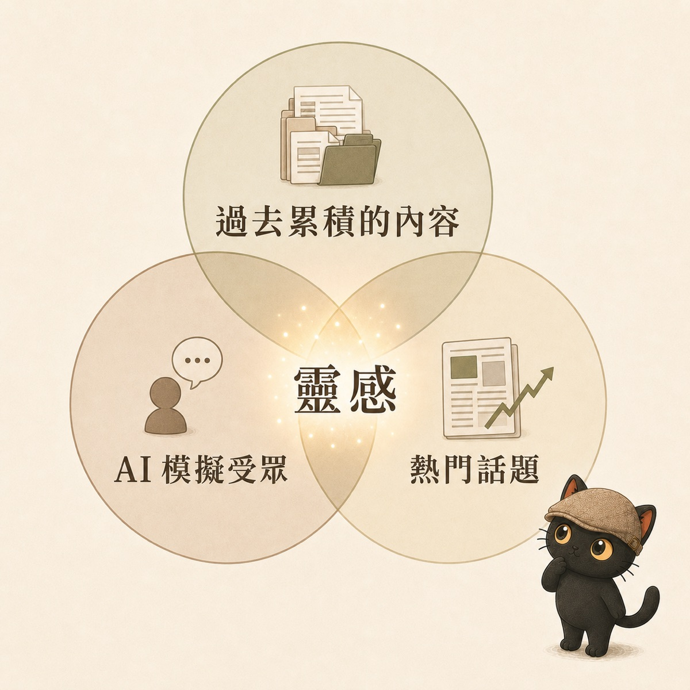
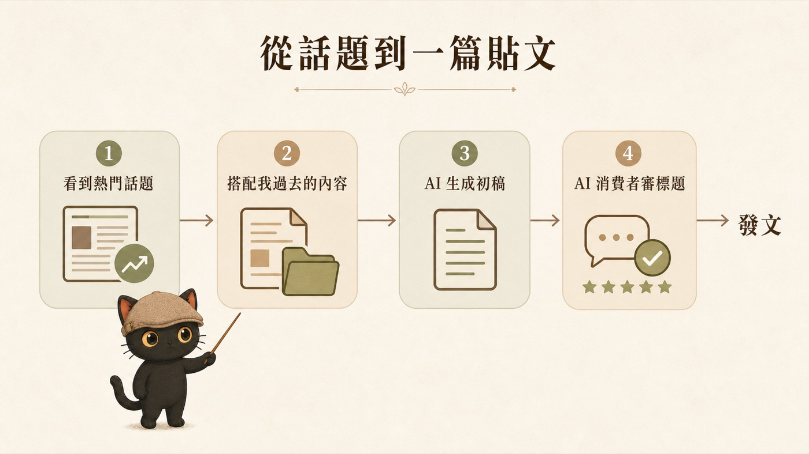
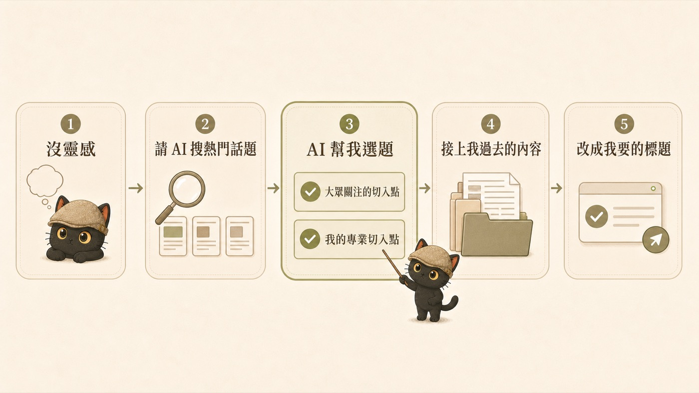

In two classes in a row, students asked me the same thing: running a one-person studio means being both principal and bell-ringer, and I'm worn out from thinking up a topic to post every day. This article breaks down my own "inspiration production system": the three sources of inspiration, how I accumulate them day to day, how to tag material so you can actually retrieve it, and the two real prompts I use. A viral hit is a matter of luck, but ordinary, steady posting with your own personal voice is something a system can produce.
- Solo businesses, creators, anyone who wants to post to social media consistently but gets stuck on "what do I post today" every day
- Anyone sitting on a pile of old articles, notes, and screenshots that can never be found when they're actually needed
- Knowledge workers who want AI to help with their posting, only to find the output doesn't sound like them
- A "three sources of inspiration" model, past accumulated content, AI-simulated audiences, and hot topics, and how to combine them
- Three tagging techniques that make the pool actually retrievable, plus a ready-to-copy tagging prompt
- A two-prompt workflow that takes you from spotting a trend to a finished post, plus two free skill packages
Grinding out "what should I post today" every day is exhausting
In two classes in a row, students asked me the same thing.
One said: running a one-person studio means being both principal and bell-ringer, and I'm worn out from thinking up a topic to post every day. Another said: I want to post systematically, I'd love for AI to take my past blog articles and rewrite a whole week of posts directly, in the format and tone I want.
My answer to this: yes, you can, and inspiration is something you can produce steadily.
Let me set expectations first: a viral hit is still a matter of luck. But ordinary, steady posting with your own personal voice is something you can achieve by building a system. I call this system the "inspiration pool."
The three sources of the inspiration pool
My inspiration pool has three sources. Each one is ordinary on its own; the power is in combining them.

The Threads posts, in-depth articles, daily work logs, things I've taught in class, questions I've answered for students, these are all material you've already worked through and can reuse. Every piece you've written can be written again from a new angle, for a new audience. The value: you never have to start from scratch.
I ask AI to role-play my various audiences: the owner of a one-person company, the admin staffer new to AI, the lecturer looking to reinvent themselves, and have each voice their own struggles. This step surfaces "topics worth testing," which I then check against real comments, conversations, and questions customers have actually asked, to decide which to write first. AI simulation is a forward scout, not a stand-in for the real audience. I use my own AI consumer validation skill package, which has AI generate ten audience members at once to critique my content.
What everyone's talking about lately, which topics have traffic, this source is what gets you seen. I don't scroll through topics one by one myself. I have AI dispatch a few agents to look separately (one checks trends, one checks how much a topic is being discussed, one checks what competitors are writing), each agent brings back only information with cited sources, and then I pick. The full setup for this "multi-agent research" deserves its own piece, and I'll publish a tutorial on it later; for now it's enough to know the approach exists. But a topic is only the entry point, not the content itself. Chasing trends alone won't grow trust; a topic only matters when it can connect back to your expertise.
The power is in the combination: use a hot topic to hook into what people care about, then connect it back to my own professional solution. The topic draws people in, the scenario makes the reader feel "this is about me," and the solution turns traffic into trust. One topic can pair with different old pieces, and one old piece can meet different audiences, and that's the inspiration library: an endless supply of combinations.
How to build up this pool
The inspiration pool isn't built the moment you need it; it's accumulated bit by bit over time. Two habits:
Habit one: when you save something, write one extra sentence
We used to just hit like and bookmark whenever we saw a good article. Now I add one more sentence: why I think it's good, what about it struck me, and what problem or need led me to it in the first place.
That sentence is the "user manual" for that piece of material. What's the difference? Material you only bookmarked, you won't even remember why you saved it three months later; material with a sentence attached lets the AI know "what kind of data gets used in what kind of situation" the moment it reads it, so it can retrieve it when you need it and use it in the right place.
Habit two: toss it in and let AI tag it
Have an idea, spot a good case study, get a question from a customer, don't organize it, just toss it to the AI and ask it to tag and file it. When it's time to post, I ask it to give me five inspiration keywords to write from. Enough small sparks add up to an in-depth article, a livestream, a meetup talk.
Tags are the retrieval system for the inspiration pool
Once the pool grows large, what really decides how usable it is comes down to the tags. Tossing material in is easy; whether you can pull it back out three months later depends on how well you tagged it. Three techniques:
Technique 1: give each piece of material at least three tags, one per category
Line these up with the three categories in Technique 3 below: one topic, one audience, one scenario, plus one or two more if needed. Once the tags are on, scattered material grows itself into strand after strand of topic lines; when you want to write on a given topic, pulling the whole strand out gives you a ready-made material bundle.
Technique 2: use fixed words for tags, don't spin up synonyms at random
This is the trap most people fall into. Today you save it under "AI applications," tomorrow "artificial intelligence applications," the day after "AI tools," and the same topic gets scattered across three tags, so the pool stops retrieving. The fix is simple: open a "my tag list," rule that each concept uses only one fixed word, and have the AI read this list before it tags anything, asking you first before adding any word that isn't on the list. This is the plain-language version of a controlled vocabulary, and the starting point of my whole Tag Wiki method.
Technique 3: tag in three categories so retrieval has dimensions
My own habit is at least three categories: topic (what the piece is about, e.g. "inspiration pool," "skill package"), audience (who the piece is for, e.g. "one-person company," "lecturer"), and scenario (when you'd use it, e.g. "opening story," "counterexample," "supporting data"). With all three in place, you can issue a compound command: "Find me material tagged topic 'skill package,' written for 'one-person company,' that works as an 'opening story,'" and the pool instantly becomes a searchable database.
In class I gave a ready-to-copy prompt for this (paste in your tag list too, so the AI tags with the fixed words):
In practice: from spotting a trend to publishing
One prerequisite before this step: first put your past articles, logs, and student Q&A somewhere the AI can find them (a folder, a note vault, or an AI project all work), so it has something to draw from. Once the place is set up, all that's left is two prompts.
I spot a trending topic, feel like there's something in it, and toss it to the AI:
It pulls the right old piece out of my database (this step is only accurate if you tagged well) and combines it with the trend into a new piece. Once it's written, I say:
Two prompts, one post. The hook is new, the content is what I'd already accumulated, and the title is something the audience understands. Each of the three sources takes its place in this flow: source three supplies the trend, source one supplies the content, source two vets the title.

On days with no inspiration, here's how I pick a topic
On days when I genuinely have no inspiration, I don't force it, I just ask AI to search hot topics for me. Once it has them, I ask it two questions: which of these are entry points everyone is paying attention to, and which can I approach from my professional angle? Then I have it help me pick. Once the topic is chosen, I connect it to my past content, and finally use opening-line formulas to draft a few titles, score them from the audience's perspective, and rework them into the one I want.

AI consumer validation: has AI simulate your various audiences and evaluate your articles, titles, and product copy.
title-rewriter: turns one piece of content into multiple opening versions, each title with a green / yellow / red risk rating, no clickbait.
Combined, the two packages amount to having AI generate ten audience members to raise questions, then rewriting the title in their language.
→ Go to the skill package download pageThe philosophy of frequency: consistency beats being picture-perfect
Finally, the mindset. When it comes to social media, I believe consistency matters more than being picture-perfect.
I've thought about making videos too, but given how my time is currently allocated, the effort of one short video is enough for me to write five to ten Threads posts. A Threads post is cheap to produce, so for now I choose Threads posts to keep the rhythm going. That's my trade-off, not a claim that short videos are bad.
Rather than spending a month pouring myself into one video, then burning out and not wanting to shoot the next month, I'd rather keep a steady cadence: right now that's one to two posts on weekdays and three to five on weekends. A weekday post with potential gets a new opening line and goes out again on the weekend.